The Weighbridge System records every truck that crosses a weighbridge, prints its ticket, and (optionally) turns the weighing into a KRA eTIMS invoice. It replaces the old Java program, which existed in seven slightly different copies, one per client (Joy, Mama, Farisi, Spenza, Uwezo, Jirani and the plain version). Those differences (COM port, how the weight is read, company name) are now settings in a single program.
| Part | Where it runs | What it does |
|---|---|---|
| Central server wb-server | One Linux server (cloud or office). Database: PostgreSQL (Neon). | Holds all clients' data. Hosts the dashboard (web page) for office staff. Sends sales to KRA eTIMS. Pushes settings to stations. |
| Station wb-station | The PC in the weighbridge office, connected to the indicator by cable. | Reads the scale, shows the operator screen, saves and prints tickets, and keeps working when the internet is down. Syncs with the server automatically. |
| Indicator | The display box next to the weighbridge. | Sends the weight to the station over a serial (RS-232/RS-485/USB) or network cable. |
INDICATOR ──cable──► STATION PC (wb-station) ──internet──► CENTRAL SERVER (wb-server) ──► eTIMS ──► KRA
local database PostgreSQL
operator screen dashboard for the office
ticket printer
SPZ1) that starts every ticket number (SPZ1-000123) and its own scale settings.| Role | Can do |
|---|---|
| Operator | Sign in at a station, take first/second weights, print tickets, create invoices from tickets. |
| Supervisor | Everything an operator can, plus: void tickets, type a manual weight (if allowed), station setup (scale, printer), edit customers/products/vehicles, cancel or retry invoices. |
| Viewer | Dashboard and reports only. |
| Admin | Everything, including sites, stations and users. |
A user can be tied to one site (they only see that site's data) or to all sites.
You do this once. All clients and stations share the same server.
weighbridge.yourcompany.co.ke).weighbridge-server-linux.tar.gz (built by the GitHub "release" workflow or by scripts/build-release.sh).# 1. a user and folder for the program sudo useradd --system --home /opt/weighbridge weighbridge sudo mkdir -p /opt/weighbridge sudo tar -xzf weighbridge-server-linux.tar.gz -C /opt/weighbridge --strip-components=1 sudo chown -R weighbridge: /opt/weighbridge # 2. settings cd /opt/weighbridge sudo cp .env.example .env sudo nano .env # fill in DATABASE_URL and JWT_SECRET (see below) sudo chmod 600 .env
| Setting | What to put |
|---|---|
DATABASE_URL | The Neon pooled connection string (it contains -pooler). The program creates all tables itself on first start. |
JWT_SECRET | A long random value. Create one with head -c 48 /dev/urandom | base64. Changing it later signs everyone out. |
BIND_ADDR | 127.0.0.1:8080 (nginx in front, below). |
WEB_DIR | /opt/weighbridge/web |
ETIMS_URL, ETIMS_API_KEY | Optional. See chapter 5. Leave empty to record sales without sending them to KRA. |
# creates the tables (first run) and an admin login sudo -u weighbridge ./wb-server create-admin --username admin --password 'Choose-A-Long-Password' # run it as a service that starts at boot and restarts if it stops sudo cp linux/wb-server.service /etc/systemd/system/ sudo systemctl daemon-reload sudo systemctl enable --now wb-server sudo systemctl status wb-server # should say "active (running)" curl http://127.0.0.1:8080/api/health # {"ok":true,...}
sudo apt install nginx certbot python3-certbot-nginx
sudo cp linux/nginx-weighbridge.conf /etc/nginx/sites-available/weighbridge
sudo nano /etc/nginx/sites-available/weighbridge # put your domain name
sudo ln -s /etc/nginx/sites-available/weighbridge /etc/nginx/sites-enabled/
sudo nginx -t && sudo systemctl reload nginx
sudo certbot --nginx -d weighbridge.yourcompany.co.ke
Open https://weighbridge.yourcompany.co.ke and sign in as admin.
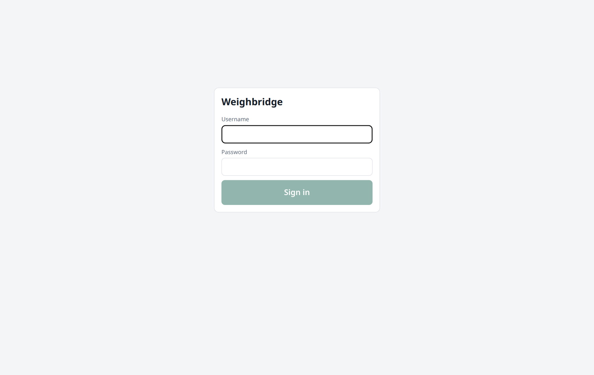
/opt/weighbridge (your .env is kept), start it. Database changes are applied automatically at start-up.sudo systemctl stop wb-server && sudo tar -xzf weighbridge-server-linux.tar.gz -C /opt/weighbridge --strip-components=1 && sudo systemctl start wb-serverjournalctl -u wb-server -fpg_dump "$DIRECT_URL" -Fc -f weighbridge-$(date +%F).dump (use the URL without -pooler)..env file contains the database password. Never email it or commit it to git. If it leaks, reset the password in the Neon console and update .env.Do this on each weighbridge PC. It takes about 15 minutes.
tF setting). The old program already needed this, so existing sites are usually set up.weighbridge-station-windows.zip.weighbridge-station-windows.zip to a folder, for example the Desktop.Set-ExecutionPolicy -Scope Process Bypass .\install-station.ps1
C:\Weighbridge, sets it to start automatically with Windows (and restart if it ever stops), puts a Weighbridge icon on the desktop, and opens the setup screen.Linux PCs: unpack weighbridge-station-linux.tar.gz to /opt/weighbridge-station, add the user to the dialout group (serial port access) and install wb-station.service the same way as the server service.
The first time the screen opens it asks for the server address and the station key:
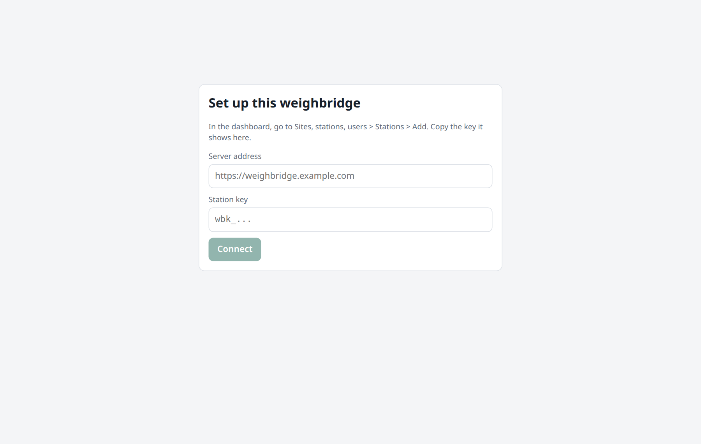
https://weighbridge.yourcompany.co.kewbk_... key shown once when the station was added in the dashboard.If the station was created from a client preset, the scale settings are already there. Otherwise, or to check them, sign in as a supervisor and press Setup.
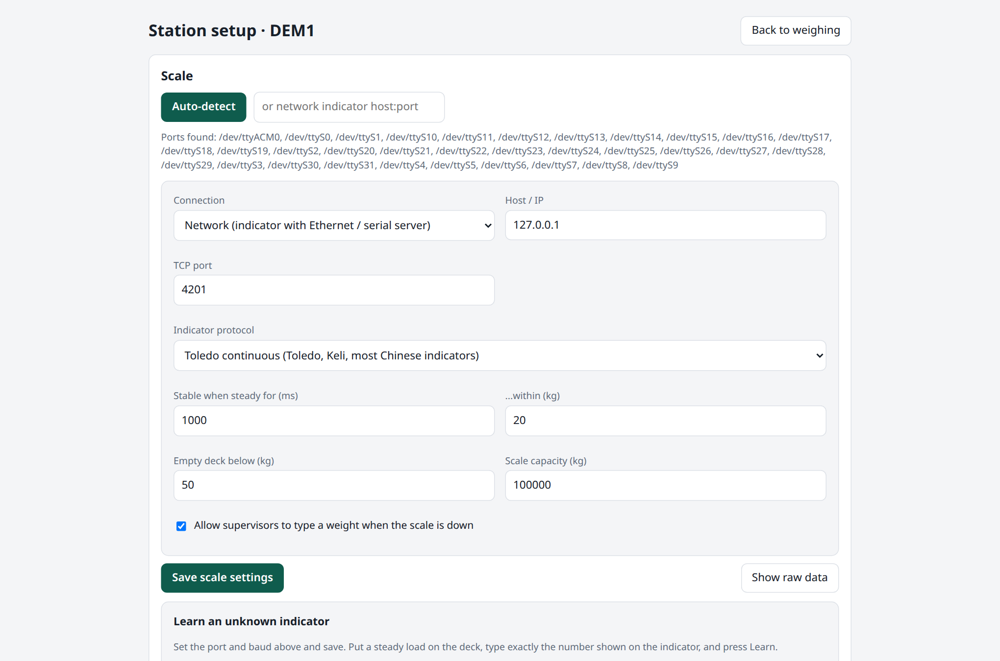
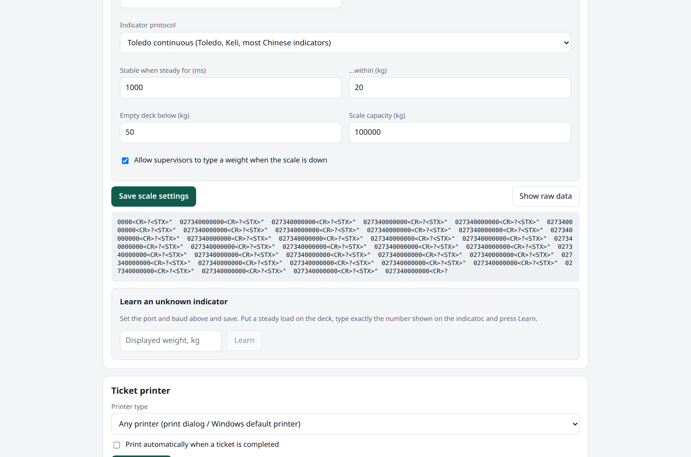
| Setting | Meaning |
|---|---|
| Connection | Serial cable (COM port), or network for indicators with Ethernet / serial-to-network converters (IP and port). |
| Baud rate, data bits / parity / stop bits | Must match the indicator. The old program used 2400, 8N1 at every site. Toledo output is often 9600 7E1. |
| Indicator protocol | How to read the weight from the data (see chapter 10). Auto-detect chooses it. |
| Stable when steady for / within | A weight counts as stable only after it stayed within this many kg for this long (default 1.5 s, 20 kg), and the indicator does not report motion. Weights can only be captured when stable. |
| Empty deck below | Readings below this (default 50 kg) are treated as "no truck". |
| Scale capacity | Readings above this are refused. |
| Allow manual weights | Lets a supervisor type a weight when the scale is broken. The ticket is marked "manual" and reported on the dashboard. |
| Printer type | When to use |
|---|---|
| Any printer (print dialog) | Default. Works with any printer installed in Windows. A print window opens; press Enter. |
| Network receipt printer | Thermal receipt printers on the network (ESC/POS, usually port 9100). Prints instantly with no dialog, and cuts the paper. |
| Serial / USB receipt printer | Receipt printers on a COM port. |
| Print command | Linux: for example lp -d TM-T20. |
Tick Print automatically to print every ticket as soon as it is complete.
A new client needs no programming: you add a site, a station, the client's products and customers, and users. In the dashboard open Sites, stations, users.
| Field | Meaning |
|---|---|
| Code | Short and unique, for example SPENZA. It starts invoice numbers (INV-SPENZA-000001). |
| Company / site name | Printed at the top of tickets. Automatically used as From on sales and To on purchases, as the old program did. |
| KRA PIN, phone, address, footer | Printed on tickets and receipts. |
| Prices include VAT | Whether product prices already contain VAT (usual for retail prices). |
| Invoice sale tickets automatically | If on: every completed sale ticket with a priced product becomes an invoice (and is sent to eTIMS) with no button press. |
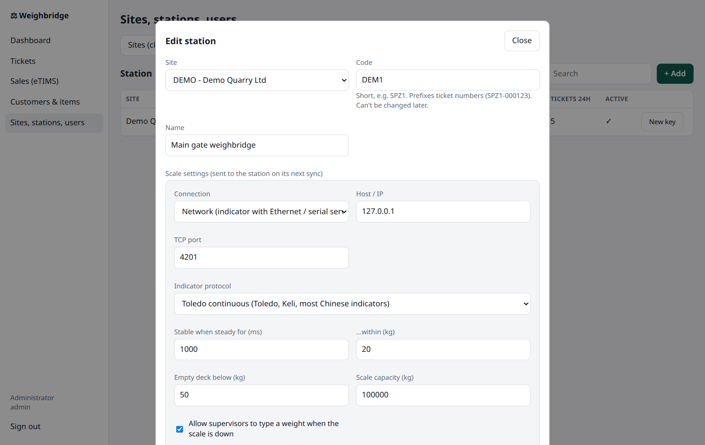
SPZ1; it starts ticket numbers and can't be changed later) and a name.Later changes to the scale settings here are sent to the station automatically within about 10 seconds.
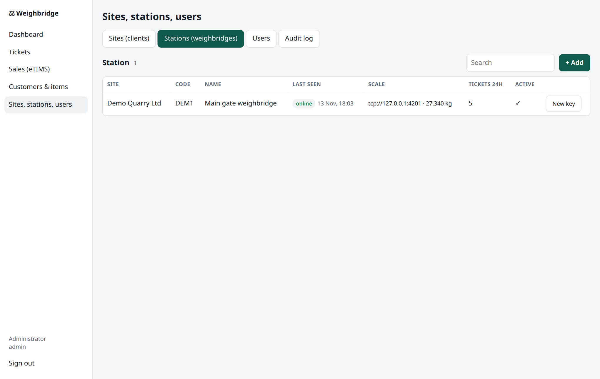
For the seven old program copies there are ready-made settings in the presets folder. On the server:
cd /opt/weighbridge
sudo -u weighbridge ./wb-server apply-preset presets/spenza.json
# prints the station key: enter it at the Spenza weighbridge PC
| Preset | Replaces | Port | Protocol |
|---|---|---|---|
| joy.json | weighBridgeJoy.java | COM4, 2400 | generic-number |
| mama.json | weighBridgeMama.java | COM4, 2400 | generic-number |
| farisi.json | weighBridgeFarisi.java | COM4, 2400 | sign6 (+000140) |
| spenza.json | weighBridgeSpenza.java | COM4, 2400 | generic-number |
| uwezo.json | weighBridgeUwezo.java | COM4, 2400 | generic-number |
| jirani.json | weighBridgeJirani.java | COM4, 2400 | generic-number |
| spenza-com3.json | weighBridge.java | COM3, 2400 | generic-number |
Under Customers & items:
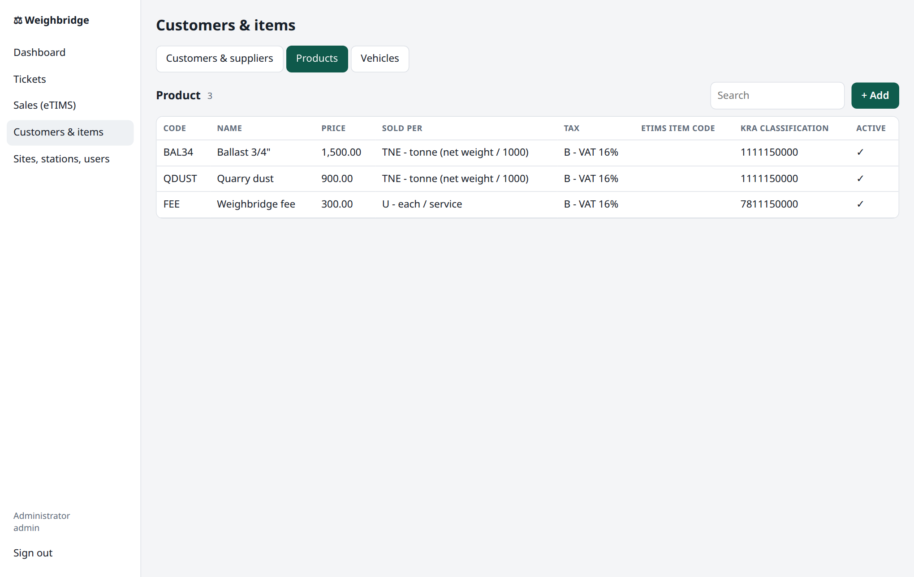
| Product field | Meaning |
|---|---|
| Price, Sold per | Price per TNE (tonne: invoiced quantity = net kg ÷ 1000), per KG, or per U (each/service). |
| Tax | KRA tax type: B = 16% VAT, E = 8%, A = exempt, C = zero-rated, D = non-VAT. |
| eTIMS item code | If the item is registered in eTIMS, its code. Otherwise leave empty and fill the classification. |
| KRA classification | The KRA item classification code (needed when there is no eTIMS item code). |
Code FEE | Create a product with code FEE (for example "Weighbridge fee", unit U) so that weighing charges are invoiced with the right tax settings. |
Customers & suppliers need a name; add the KRA PIN for customers who need it on their tax invoices. Vehicles are created automatically the first time a plate is weighed, and their empty weight (tare) is remembered after every completed weighing.
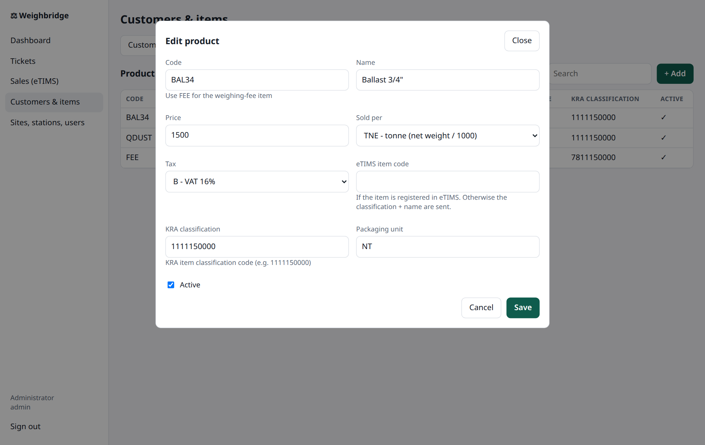
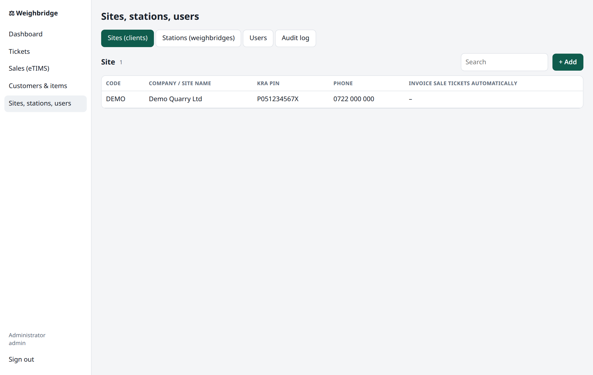
Add an account for each operator (role Operator, site = their site) and at least one Supervisor per site. Passwords need at least 8 characters. Users reach their stations within about 10 seconds and can then sign in there, even if the internet goes down later. Turning off Active blocks the user everywhere.
Sales are stored in exactly the format of your etims-rust server (POST /invoices): buyer, sale, item lines with tax type, and the KRA amounts per line (prc, splyAmt, dcAmt, taxblAmt, taxAmt, totAmt), calculated with the same VAT rules to the cent.
/opt/weighbridge/.env:ETIMS_URL=https://your-etims-server/api/v1
ETIMS_API_KEY=the-api-key
ETIMS_CONTROL_UNIT_ID= # only if neededsudo systemctl restart wb-server. From now on every new normal sale is sent automatically..env and database), or ask for per-site eTIMS keys to be added.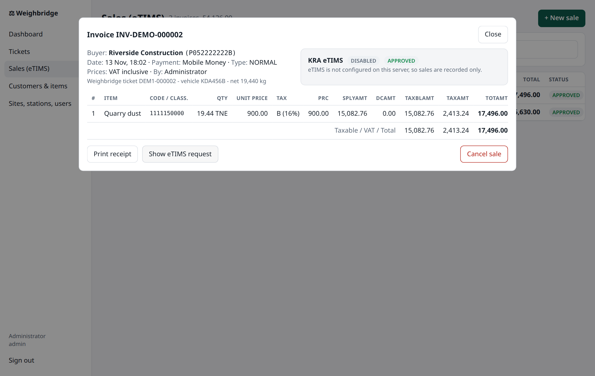
| Status | Meaning and what to do |
|---|---|
| DISABLED | eTIMS not configured, or a cancelled/proforma sale. Not sent. |
| PENDING | Waiting to be sent (normally seconds). |
| SUBMITTED | eTIMS accepted it and is waiting for KRA's signature. Checked again automatically. |
| SIGNED | Done. The CU invoice number, signature and KRA verification link are stored and printed on the receipt. |
| FAILED | Hover over or open it to see the reason. Network problems retry by themselves (30 s, 1 min, 2 min ... up to 30 min). Data problems (for example a product without classification) need fixing; then press Send to eTIMS now. |
Double-click the Weighbridge icon on the desktop and sign in with your username and password.
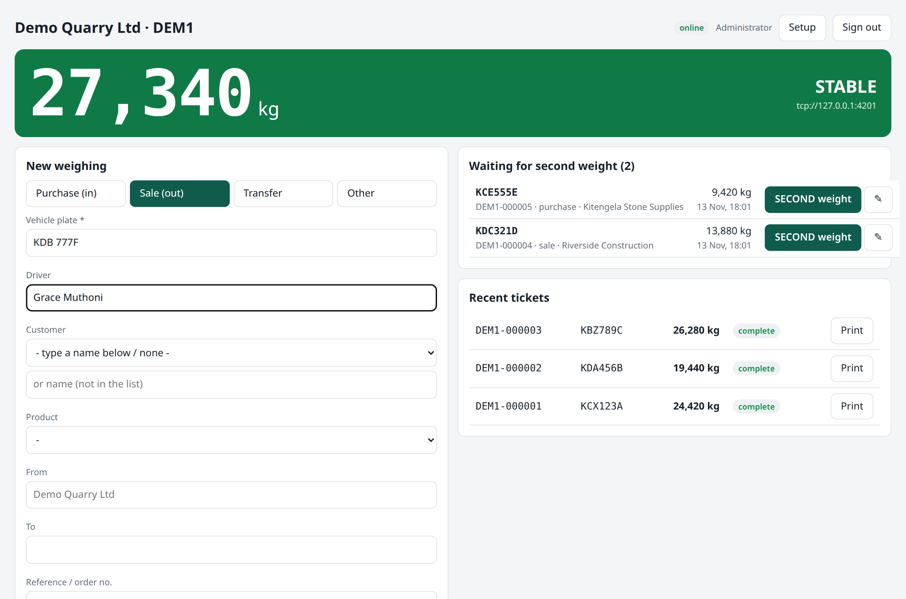
| Colour / word | Meaning |
|---|---|
| Green: STABLE | The truck is still and the weight is steady. Weights can be captured. |
| Orange: MOVING | The weight is changing. Wait for the driver to stop and switch off. |
| Grey: NO SIGNAL / NO SCALE | No data from the indicator. Check that it is on and the cable is in (chapter 9). |
The badges at the top show whether the station is online and how many tickets are waiting to upload. Weighing works the same when offline.
A truck can't be weighed in twice: if it already has an open ticket, the screen says so.
Every completed ticket remembers the truck's empty weight. Next time, after typing the plate you'll see "Stored empty weight". Tick Single weighing and press Capture weight & finish: the ticket completes with one pass over the bridge.
Tickets print when completed (or press Print under Recent tickets). Reprints are marked REPRINT.
DEMO QUARRY LTD
Mlolongo, Mombasa Rd
WEIGHBRIDGE TICKET
------------------------------------------
Ticket No: DEM1-000001
Type: SALE
Vehicle: KCX123A
Customer: Acme Builders Ltd
Product: Ballast 3/4"
------------------------------------------
1st 13/11/2026 17:51 14,260 kg
2nd 13/11/2026 17:58 38,680 kg
------------------------------------------
GROSS: 38,680 kg
TARE: 14,260 kg
NET: 24,420 kg
If the station allows manual weights, a supervisor sees a Manual weight box (first weight) and a ✎ button (second weight). Manual weights are marked on the ticket and counted on the dashboard. Use them only when the indicator really can't be read.
Ask a supervisor to void a wrong ticket (dashboard Tickets > open it > Void, with a reason) and weigh again. Voided tickets stay visible for audit.
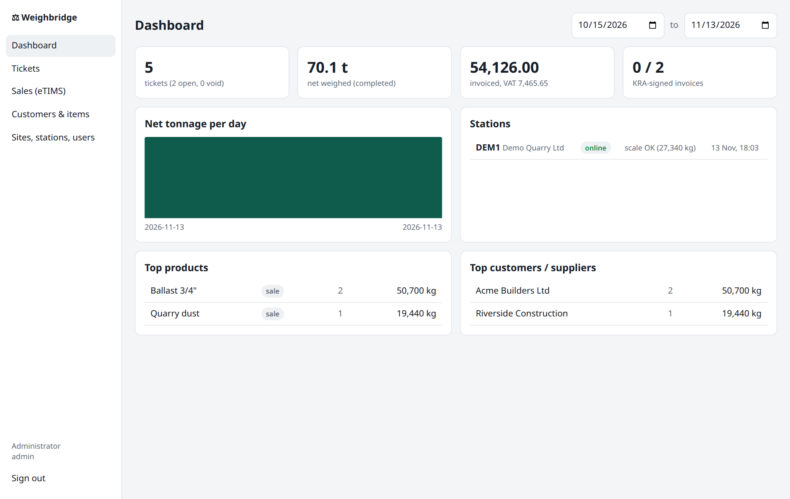
Choose the date range at the top right. The Stations box shows each weighbridge as online or offline, its live scale reading, and any tickets waiting to upload. A note appears if any tickets in the period used typed (manual) weights.
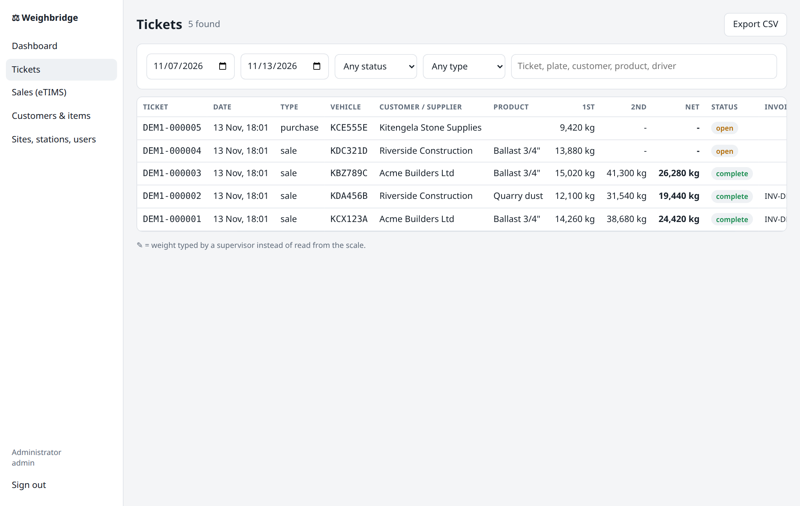
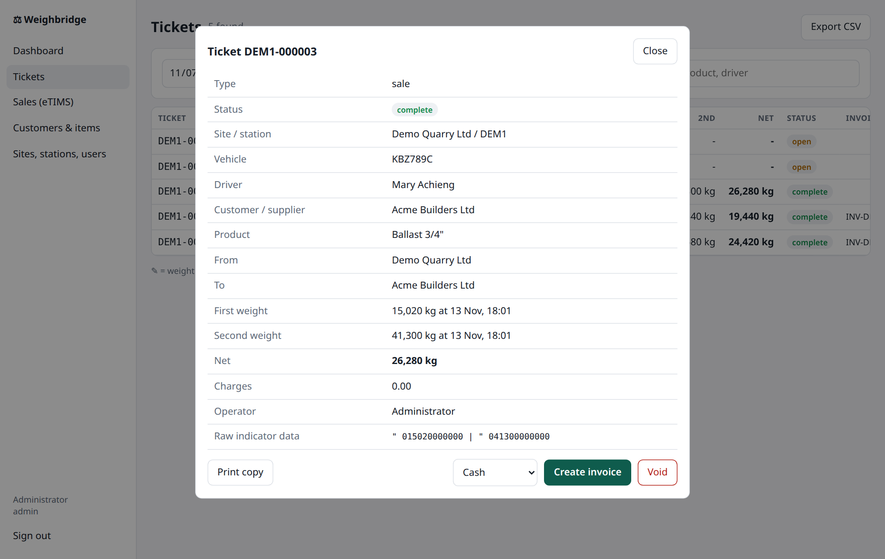
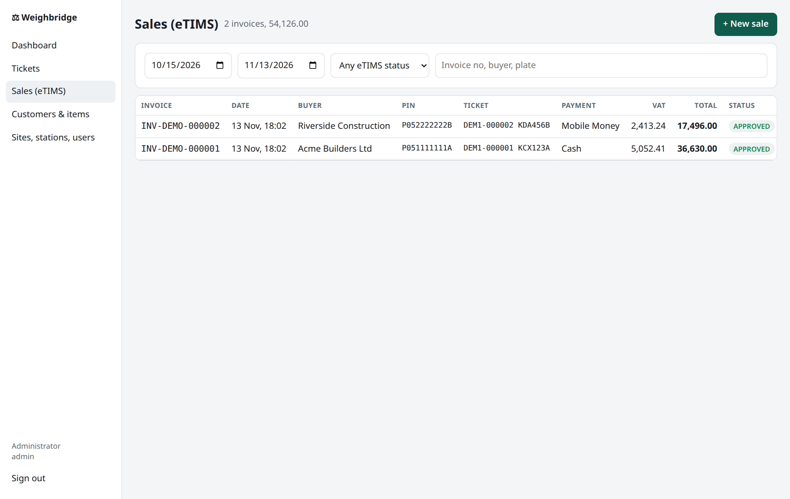
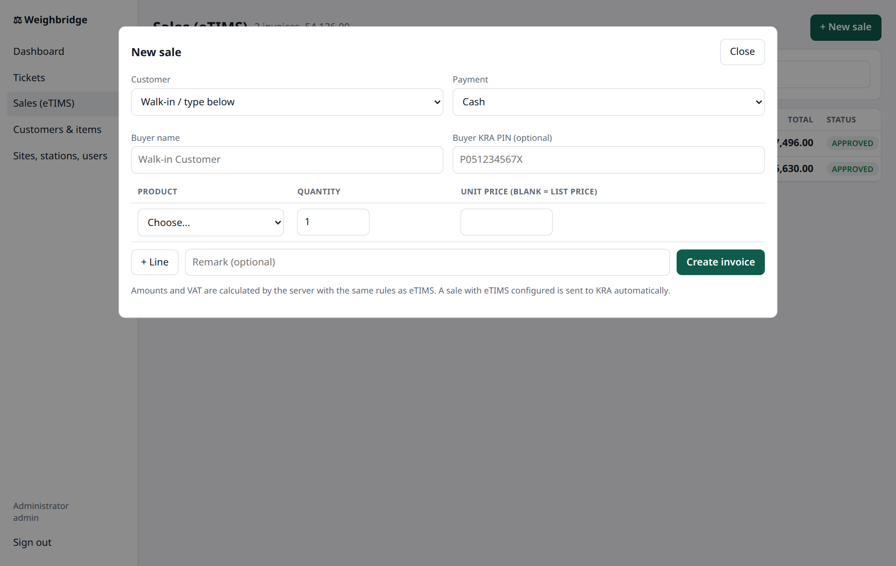
Admins and supervisors can see who did what (sign-ins, voids, price changes, new users and so on) under Sites, stations, users > Audit log.
The old program kept weighing records on the client's online ERP (*.digerp.com, MySQL) and other records in its PostgreSQL database (sako). Export them as CSV files (with a header row), copy them to the server, and import them in this order: customers, products, vehicles, then tickets.
cd /opt/weighbridge
# check first: --dry-run reads and validates, writes nothing
./wb-server import parties customers.csv --dry-run
./wb-server import parties customers.csv
./wb-server import products items.csv
./wb-server import vehicles vehicles.csv
./wb-server import tickets weighdata.csv --site SPENZA
Running an import again is safe: rows already imported are skipped. The importer recognises the old column names:
| File | Recognised columns (any of) |
|---|---|
| tickets | trans_no/receipt_no, trans_type (Purchases/Sales/Others), vehicle, driver, source_name, dest_name, product/item, first_weight, second_weight, charges, memo, date/trans_date, second_weight_date, operator, trans_id/reference |
| parties | name/supplier_name/client_name, code, type, pin/kra_pin, phone, email, address |
| products | name/item_name, code/item_code, price/unit_price, unit, classification, tax_type |
| vehicles | plate/vehicle_no/reg_no, tare, driver |
Old tickets get numbers starting OLD- (for example OLD-4512), keep their original number for reference, and dates are read as Kenyan time. Example export from MySQL:
mysql -h HOST -u USER -p DB -e "SELECT * FROM weighdata" -B | tr '\t' ',' > weighdata.csv
| Problem | What to check |
|---|---|
| Display grey, "NO SCALE", error "cannot open COM4" | Wrong port or the port is in use. Close the old Java program if it is still running (only one program can use a COM port). Check Device Manager for the right COM number, then fix it in Setup. |
| "NO SIGNAL" (port opens, no weight) | Indicator off, cable loose, TX/RX swapped, output not in continuous mode, or wrong baud rate. Use Setup > Show raw data: nothing at all = cable/indicator; garbage characters = wrong baud rate; readable text = run Auto-detect or Learn. |
| Weight shown but wrong (for example reversed or ×10) | Wrong protocol. Run Auto-detect and pick the line matching the display, or use Learn. |
| Always "MOVING", never stable | Truck still moving, wind, or a noisy indicator. Raise "within (kg)" to the scale's division (often 20 kg) in the scale settings. |
| Station shows "offline" | Internet down: weighing continues and tickets upload later. If it lasts, check the server address in Setup and that the server is running (systemctl status wb-server). |
| "server refused pull: HTTP 401" | Wrong or replaced station key, or the station was deactivated. Enter the current key in Setup > Server connection. |
| Can't sign in at a new station | The user must belong to that site (or to all sites) and be active. Wait about 10 seconds after creating them (the station syncs every 10 seconds). |
| Invoice FAILED in eTIMS | Open it and read the error. Usually a product without KRA classification, an invalid buyer PIN, or eTIMS unreachable. Fix it and press Send to eTIMS now. |
| Printer prints nothing | For a network printer, check its IP (print its self-test page). Otherwise switch to "Any printer" to use Windows printing. |
| Station program not running | Restart the PC, or in PowerShell (Admin): Start-ScheduledTask WeighbridgeStation. Logs: run C:\Weighbridge\wb-station.exe --data-dir C:\Weighbridge\data --web-dir C:\Weighbridge\web in a window to see messages. |
Installed next to the station. Close the station first (it needs the port).
wb-scale ports # list serial ports wb-scale detect # auto-detect on every port wb-scale monitor --serial COM4 --baud 2400 --profile toledo # live readings wb-scale learn --serial COM4 --baud 2400 --weight 12340 # build a profile wb-scale profiles # list protocols
| Protocol | Looks like | Used by |
|---|---|---|
| toledo | binary status bytes + 6-digit weight | Mettler Toledo, Keli, most Chinese indicators ("tF=1"/"Toledo" output). Reports motion. |
| st-gs | ST,GS,+0012340kg | A&D, CAS and many OEM indicators. ST = stable, US = moving. |
| yaohua-reversed | =0432100 (digits backwards) | Yaohua XK3190 with "tF=0". |
| weight-unit | 12340 kg G | Rinstrum, Avery, Cardinal. "M" = motion. |
| sign6 | +000140 | Budget indicators (the Farisi site). |
| generic-number | any text with a number | Fallback, equivalent to the old program's "keep the digits" rule. No motion flag. |
| learned | anything | Built by Learn mode from the displayed weight. |
| Item | Location |
|---|---|
| Server program and settings | /opt/weighbridge/wb-server, /opt/weighbridge/.env |
| Server address (local) | 127.0.0.1:8080 behind nginx (HTTPS 443) |
| Station program (Windows) | C:\Weighbridge\wb-station.exe |
| Station database and settings | C:\Weighbridge\data\station.db, station.json. Back this folder up; it holds tickets not yet uploaded. |
| Station screen | http://127.0.0.1:7878 (this PC only) |
| Startup task | Task Scheduler > WeighbridgeStation |
| Command | Does |
|---|---|
wb-server or wb-server serve | Run the API and dashboard (applies database updates first). |
wb-server create-admin --username U --password P | Create an admin, or reset an admin's password. |
wb-server apply-preset presets/x.json | Create or update a site and station from a preset; prints the station key. |
wb-server import KIND file.csv [--site CODE] [--dry-run] | Import old data (parties, products, vehicles, tickets). |
The simulator wb-sim pretends to be an indicator, with trucks driving on, settling and leaving:
wb-sim --format toledo --tcp 127.0.0.1:4001 # network indicator wb-sim --format st-gs --hold 23460 --tcp 127.0.0.1:4001 # fixed weight
Point a test station at network 127.0.0.1:4001 to train operators or test changes.